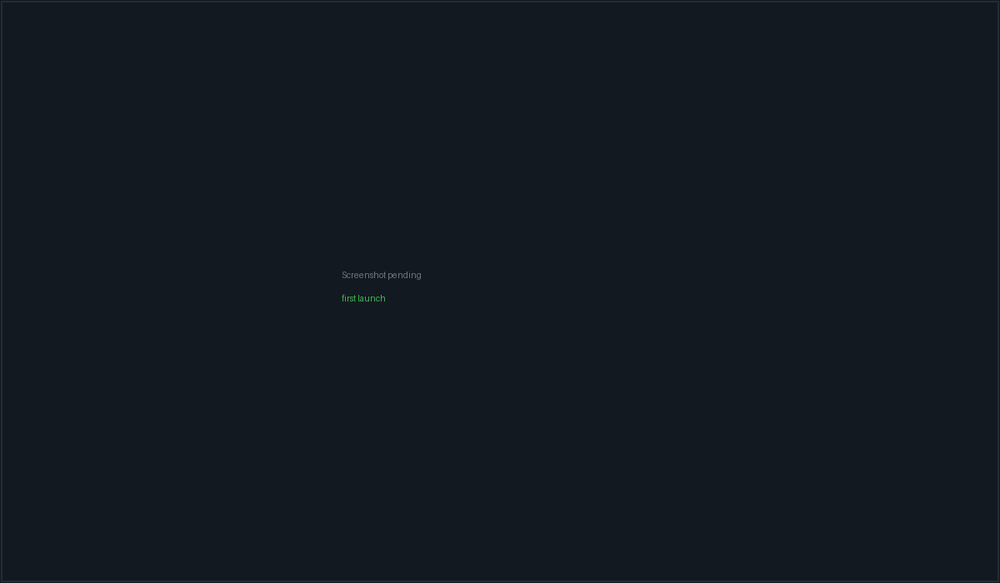
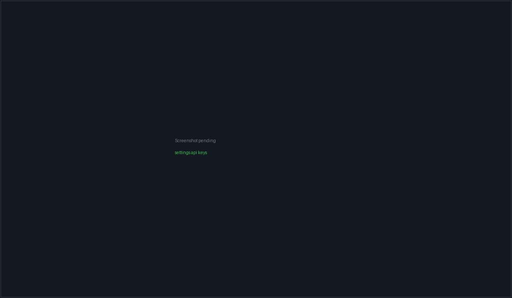

Install & first run#
PacketBench is not yet distributed the way a finished desktop app is. The source tree is at v0.13.1, Windows installers exist but have never been published, and the newest thing on GitHub Releases is nearly four months older than the current code and still carries the product's previous name. Building from source is the honest primary path, and this page treats it as such.
Nothing here is code signed and there is no auto-updater. If you want the current app, build it.
Packaged upgrades do now work, on Windows, tested twice: 0.12.1 → 0.13.0 and
0.13.0 → 0.13.1, both silent per-user installs that exited 0, left exactly
one entry in Add/Remove Programs, and preserved ~/.packetbench byte for
byte. That is the extent of what has been proven — see the caveat under
Upgrading a packaged install.
The state of distribution#
Three separate things are easy to confuse, so they are separated here.
| What exists | Where | |
|---|---|---|
| Source | v0.13.1 — package.json, src-tauri/Cargo.toml and src-tauri/tauri.conf.json all agree |
This repository |
| Local Windows builds | Unsigned NSIS + MSI for 0.11.0, 0.12.0 and 0.12.1 (built 2026-08-28), plus 0.13.0 and 0.13.1 (built 2026-08-30) | The maintainer's build machine, under packetbench-build/release/bundle/ — not in the repo, not uploaded anywhere |
| Published download | v0.5.0, published 2026-05-04 |
GitHub Releases |
What the published download actually is#
The newest release asset set on GitHub is v0.5.0 from 4 May 2026. Its
files are named PacketADE_0.5.0_x64-setup.exe,
PacketADE_0.5.0_x64_en-US.msi and packetade-0.5.0-x64.exe, because the
product was still called PacketADE at the time. It was renamed to
PacketBench on 2026-08-26, after that release.
So the published installer:
- predates the rename, and installs an app called PacketADE;
- predates the Flight Deck rework, the nine-row agent picker as it now stands,
the sidecar protocol v6–v11 additions, project memory, dictation analytics,
and everything else in
CHANGELOG.mdbetween 0.6.0 and 0.13.1; - is not an upgrade path to the current code — there is no updater to carry you forward from it.
The repository was renamed on GitHub to
git@github.com:packetloss404/PacketBench.git, matching the product name.
The old PacketADE URL still works — GitHub redirects it — but it prints a
"This repository moved" notice on every push, so update any existing clone:
git remote set-url origin git@github.com:packetloss404/PacketBench.gitCode signing and SmartScreen#
No Windows Authenticode certificate and no Apple Developer ID are configured.
src-tauri/tauri.conf.json carries no signing block, and the release gate's
signing checks (pnpm release:gate:strict) are opt-in precisely because the
credentials do not exist yet.
Practically, on Windows: running an installer you built yourself, or the old published one, raises a SmartScreen "Windows protected your PC" prompt. You clear it with More info → Run anyway. That prompt is expected and is not evidence of tampering — but it also means you have no signature to check, so only run installers you built yourself or fetched from the project's own release page.
On macOS an unsigned, un-notarized .app is refused by Gatekeeper on first
open in the usual way.
No auto-updater#
dev/updater-setup.md is a runbook, not a shipped feature. There is no
tauri-plugin-updater dependency, no updater plugin initialisation, and no
plugins.updater block in the Tauri config. New versions are installed
manually — or, on the path this page recommends, by pulling and rebuilding.
Upgrading a packaged install#
Installing a newer package over an older one works on Windows. It has been done twice, both silent per-user installs:
Start-Process .\PacketBench_0.13.1_x64-setup.exe -ArgumentList '/S','/CURRENTUSER' -Wait| Upgrade | Date | Result |
|---|---|---|
| 0.12.1 → 0.13.0 | 2026-08-30 | exit 0; one Add/Remove entry; data dir preserved |
| 0.13.0 → 0.13.1 | 2026-08-30 | exit 0; one Add/Remove entry; data dir byte-identical |
Check the installer's SHA-256 against the table in CHANGELOG.md before
running it — every build there is made from a committed tree with a clean
working directory, so each artifact maps to exactly one commit.
Two limits on what those runs proved:
localStoragedoes not survive a pre-rename upgrade. WebView2 keys its profile by bundle identifier, and the 2026-08-26 rename moved it fromcom.packetade.desktoptocom.packetbench.desktop. A package upgraded from aPacketADEbuild therefore gets an empty profile: twelve keys, including unsent composer drafts, are stranded (not deleted — the old profile stays on disk). This is an accepted consequence of the rename, not a bug to be fixed. Upgrades between two PacketBench versions are unaffected.- The pre-rename data-dir migration is still unproven on a real installed
upgrade.
~/.packetbenchalready exists on the machine that has been testing this, so the migrator correctly returns early. Proving it needs a host with~/.packetadeand no~/.packetbench.
macOS and Linux#
Build-from-source only. No macOS or Linux artifact has ever been published.
The per-platform prerequisites, target triples and bundle formats are in
dev/multi-platform-build.md;
Build & release covers the same ground for contributors.
On macOS, brew install cmake is mandatory, not optional — the
dictation module's whisper-rs-sys build-depends on CMake, which does not
ship with the Xcode Command Line Tools. A clean Mac fails the build without
it.
Building from source#
This is the supported way to run current PacketBench.
Prerequisites#
- Node.js — a recent LTS. (The runtime bundled into installers is pinned to 24.15.0; that is separate from the Node you develop with.)
- pnpm — the repo pins
pnpm@9.15.4viapackageManager, socorepack enableis enough. - Rust, stable toolchain, plus your platform's Tauri v2 system dependencies (WebView2 on Windows, Xcode CLT on macOS, GTK/WebKitGTK on Linux).
- Optionally, agent CLIs on
PATH—claude,codex,opencode,packetcode. These back the terminal panes; the API agent rows do not need them.
Clone and install#
git clone git@github.com:packetloss404/PacketBench.git packetbench
cd packetbench
pnpm installpnpm install also installs the Node sidecar's dependencies through a
postinstall hook, so there is no second install step.
Run in development#
pnpm tauri devBefore the first use of a sidecar-backed provider (Claude Agent SDK or OpenAI Agents SDK), compile the sidecar once:
pnpm sidecar:buildOn Windows the rustup toolchain must be on PATH for Tauri builds.
In a Git Bash shell:
export PATH="$HOME/.rustup/toolchains/stable-x86_64-pc-windows-msvc/bin:$PATH"
Build an installer#
pnpm tauri buildThis is not a plain compile. Tauri's beforeBuildCommand runs the prebundle
chain first: DMG scratch cleanup, fetch-node (the pinned Node runtime for
your host triple), sidecar:install, sidecar:build, sidecar:prune, and
release:gate. On Windows it produces both an NSIS -setup.exe and an MSI,
because bundle.targets is "all".
sidecar:prune is a destructive, hoisted, production-only
reinstall of agent-sidecar/node_modules. After bundling, run
pnpm sidecar:install again to restore the sidecar's devDependencies before
doing further sidecar work.
On macOS use pnpm build:macos instead — it wraps the build with the DMG
scratch-image cleanup and retry that Tauri's bundle_dmg.sh needs.
Verify your build#
pnpm preflight # format check, lint, vitest, frontend build
pnpm check # the full local ladder, including Playwright and RustThere is no CI in this repository by design; local gates are the source of truth. See Testing & gates.
First run#

The Welcome screen is what a fresh install opens to. Nothing is running yet — saved layouts hydrate dormant, so no CLI is launched until you open a workspace.
Where your data lives#
All persistent application data goes in a single hidden directory under your home folder:
~/.packetbench/
state.v1.json flights, issues, workspaces, servers, agent configs,
settings, and the memory event/pattern slice
conversations/ one JSON file per API-agent conversation
pty-transcripts/ terminal session transcripts
pty-active-pids/ PTY child registry, used to reap orphans after a crash
dictation.db dictation history and analytics
usage.jsonl token/cost ledger the budget guardrails read
known_hosts app-managed SSH known-hosts file
crashes/ panic reportsTwo kinds of state live outside that directory on purpose:
- Secrets go in your OS credential store, never in a file. See below.
- UI preferences live in the webview's
localStorage, under keys prefixedpacketbench:— theme, dock widths, onboarding dismissal, agent profiles, MCP trust profiles, cost guardrails and similar.
Project memory notes are a third case: they are ordinary Markdown in
.agents/memory inside your project, not in the app's data directory, so
they can be committed alongside the code they describe. See
Memory.
The OS keyring#
API keys and git-host tokens are stored under the keyring service
packetbench:
| Entry | Holds |
|---|---|
api-key-anthropic |
Anthropic API key (Claude API and Claude Agent SDK rows) |
api-key-openai |
OpenAI API key (OpenAI API and OpenAI Agents SDK rows) |
api-key-minimax |
MiniMax key |
api-key-openrouter |
OpenRouter key |
github-token |
GitHub PAT; additional git hosts get per-host accounts |
ssh-<serverId> |
SSH password for a remote host, when that auth method is used |
That is Windows Credential Manager, macOS Keychain, or the Secret Service on Linux. Nothing is written to disk in plaintext, and tokens never enter frontend state or workspace records.
On Linux the keyring needs an unlocked Secret Service provider
(GNOME Keyring, KWallet). In a bare session with none running, key storage
fails and the provider badges stay on missing_key.
Coming from a pre-rename install#
If the machine carries ~/.packetade state from the previous product name,
the first launch migrates it before anything else touches the data directory.
The migration is deliberately cautious, because a sibling TUI product now
claims the older PacketCode name:
- It classifies the legacy directory by the files inside it —
Ours,Foreign(the sibling TUI's home),Mixed(both), orUnknown. Oursis renamed in place to~/.packetbench— atomic on the same volume. If the rename fails (a cross-volume home returnsERROR_NOT_SAME_DEVICEon Windows), it falls back to a recursive copy and only counts as migrated if the copy fully succeeds; the legacy directory stays as a backup.Mixedis copy-only: recognised PacketBench entries are copied out and nothing belonging to the other product is moved, renamed or deleted.ForeignandUnknownare left completely alone.
If migration cannot complete, the app keeps reading the legacy directory
rather than starting empty. Keyring entries migrate lazily: a read falls back
to the legacy packetade service, writes the value into packetbench, then
deletes the old entry.
UI preferences do not survive a packaged upgrade, by design.
The rename also moved the app's bundle identifier, and the webview keys its
storage by that identifier — so an installed PacketBench starts against a
fresh, empty webview profile and the packetade: keys are simply not visible
to it. Pane layouts, dock state, your project-history list and any unsent
composer drafts start over. Flights, issues, workspaces, agent profiles,
memory and API keys are not affected: those live in the data directory and
the OS keyring, both of which migrate correctly.
Nothing is deleted. The old profile stays at
%LOCALAPPDATA%\com.packetade.desktop\EBWebView\. This was accepted rather
than fixed — reading another application's storage engine is a feature with
its own failure modes, for data that is mostly preference.
A source build is unaffected: it keeps the same identifier throughout, so the
packetade: → packetbench: copy on first boot works there.
This migration has only ever been executed from a source
build, against a copy of a real legacy data directory. No packaged
PacketBench installer has ever been installed over pre-rename state. If your
machine carries ~/.packetade data you care about, copy the directory
somewhere safe before first launch.
Add your first API key#
Terminal panes need nothing configured — they run the CLIs you already have. The API-agent rows each need a key.
- Open Settings — press Ctrl+K for the command palette and type "Settings", or use the left rail.
- Go to Agents & Models → Providers & Models.
- Pick a provider, paste the key, save.
The card covers Anthropic, OpenAI, MiniMax, OpenRouter, Ollama (no key — it
probes localhost:11434) and a custom OpenAI-compatible endpoint (key
optional, sent as a bearer token when set). Saving writes straight to the OS
keyring; the provider's badge in the agent picker flips to ready once the
key is present.

Every keyed row authenticates with an API key you supply. There is no Claude.ai or ChatGPT subscription login for API agents — see Agents & conversations for why.
Known limits of the current builds#
Being specific is more useful than a general disclaimer. As of 0.13.1:
- Sections 2–5 of the acceptance matrix — launch and lifecycle, dictation on real hardware, dictation analytics, and the two-display Monitor matrix — are substantially unrun. They need a person at the keyboard with a headset attached. What has been confirmed on an installed package is narrow: it launches and stays up with its sidecar, and the Agents and PacketCode routes mount and navigate. Everything else in those sections is open.
- Section 1 (the migration path) has been run only from source, against a copy
of a real legacy data directory. The pre-rename leg — a packaged
installer landing on a machine that has
~/.packetadeand no~/.packetbench— remains unproven. - Packaged upgrades between two PacketBench versions have been performed twice and behaved (see Upgrading a packaged install).
That is why this page describes building from source rather than pointing you at a download.
Next#
- Core concepts — the vocabulary, before you start clicking.
- Workspaces & terminals — get a CLI running in a pane.
- Settings reference — every group and what it affects.